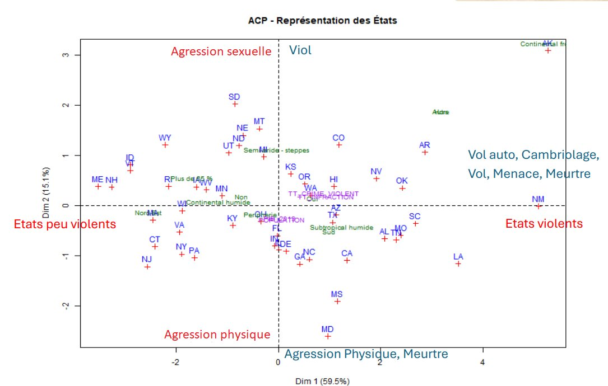

Objectif du projet
Développer une interface web interactive pour rendre accessible l'exploration d'un jeu de données complexe (statistiques criminelles par État américain). L'outil permet à un utilisateur non-expert de visualiser les corrélations et les typologies d'États en quelques clics.
Fonctionnalités clés
- Analyse descriptive dynamique : visualisations univariées et bivariées avec filtres interactifs.
- Cartographie : projection spatiale des taux de criminalité par État.
- Module statistique avancé (ACP) :
- Projection des individus (États) et des variables sur les axes factoriels.
- Calcul automatique des contributions et des Cos² pour valider l'interprétation.
- Clustering visuel des zones à risque similaire.

Lecture de l'ACP
Les deux premiers axes capturent près de 75 % de l'inertie totale. Le premier axe structure un gradient de violence globale ; le second distingue la nature des délits (agressions sexuelles et viols d'un côté, agressions physiques et meurtres de l'autre). Cette restitution rend immédiatement lisible un jeu de données qui, sous forme de tableau, resterait opaque.
Compétence mise en avant — construire un outil de Business Intelligence complet : du traitement statistique en back-end (R) jusqu'à la restitution visuelle en front-end (Shiny), pour faciliter la prise de décision.